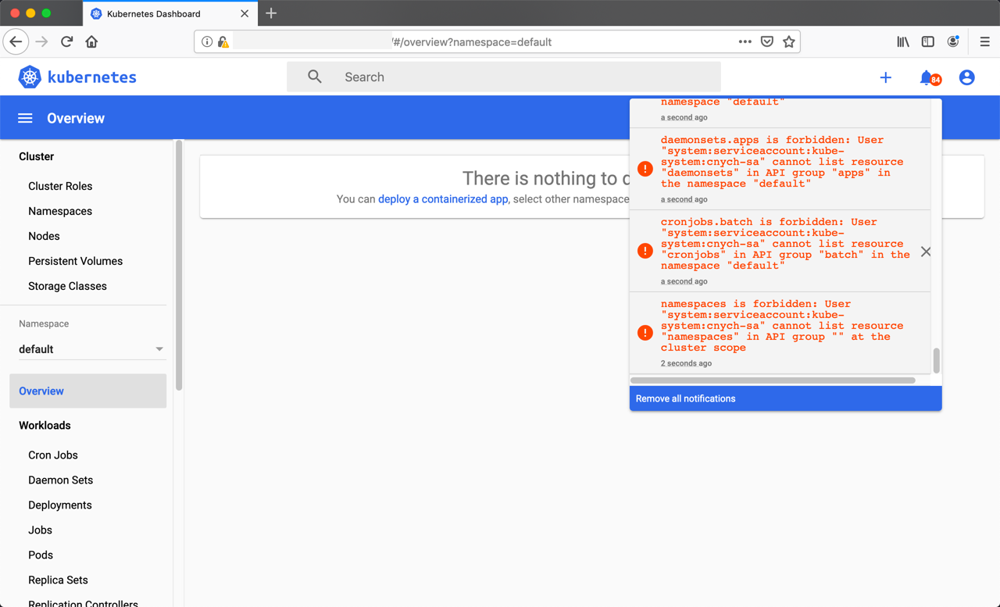

RBAC 权限控制¶
前面我们已经学习一些常用的资源对象的使用，我们知道对于资源对象的操作都是通过 APIServer 进行的，那么集群是怎样知道我们的请求就是合法的请求呢？这个就需要了解 Kubernetes 中另外一个非常重要的知识点了：RBAC（基于角色的权限控制）。
管理员可以通过 Kubernetes API 动态配置策略来启用RBAC，需要在 kube-apiserver 中添加参数--authorization-mode=RBAC，如果使用的kubeadm 安装的集群那么是默认开启了 RBAC 的，可以通过查看 Master 节点上 apiserver 的静态 Pod 定义文件：
$ cat /etc/kubernetes/manifests/kube-apiserver.yaml
...
- --authorization-mode=Node,RBAC
...如果是二进制的方式搭建的集群，添加这个参数过后，记得要重启 kube-apiserver 服务。
API 对象¶
在学习 RBAC 之前，我们还需要再去理解下 Kubernetes 集群中的对象，我们知道，在 Kubernetes 集群中，Kubernetes 对象是我们持久化的实体，就是最终存入 etcd 中的数据，集群中通过这些实体来表示整个集群的状态。前面我们都直接编写的 YAML 文件，通过 kubectl 来提交的资源清单文件，然后创建的对应的资源对象，那么它究竟是如何将我们的 YAML 文件转换成集群中的一个 API 对象的呢？
这个就需要去了解下声明式 API的设计，Kubernetes API 是一个以 JSON 为主要序列化方式的 HTTP 服务，除此之外也支持 Protocol Buffers 序列化方式，主要用于集群内部组件间的通信。为了可扩展性，Kubernetes 在不同的 API 路径（比如/api/v1 或者 /apis/batch）下面支持了多个 API 版本，不同的 API 版本意味着不同级别的稳定性和支持：
- Alpha 级别，例如
v1alpha1默认情况下是被禁用的，可以随时删除对功能的支持，所以要慎用 - Beta 级别，例如
v2beta1默认情况下是启用的，表示代码已经经过了很好的测试，但是对象的语义可能会在随后的版本中以不兼容的方式更改 - 稳定级别，比如
v1表示已经是稳定版本了，也会出现在后续的很多版本中。
在 Kubernetes 集群中，一个 API 对象在 Etcd 里的完整资源路径，是由：Group（API 组）、Version（API 版本）和 Resource（API 资源类型）三个部分组成的。通过这样的结构，整个 Kubernetes 里的所有 API 对象，实际上就可以用如下的树形结构表示出来：

从上图中我们也可以看出 Kubernetes 的 API 对象的组织方式，在顶层，我们可以看到有一个核心组（由于历史原因，是 /api/v1 下的所有内容而不是在 /apis/core/v1 下面）和命名组（路径 /apis/$NAME/$VERSION）和系统范围内的实体，比如 /metrics。我们也可以用下面的命令来查看集群中的 API 组织形式：
$ kubectl get --raw /
{
"paths": [
"/api",
"/api/v1",
"/apis",
"/apis/",
......
"/version"
]
}比如我们来查看批处理这个操作，在我们当前这个版本中存在两个版本的操作：/apis/batch/v1 和 /apis/batch/v1beta1，分别暴露了可以查询和操作的不同实体集合，同样我们还是可以通过 kubectl 来查询对应对象下面的数据：
$ kubectl get --raw /apis/batch/v1 | python -m json.tool
{
"apiVersion": "v1",
"groupVersion": "batch/v1",
"kind": "APIResourceList",
"resources": [
{
"categories": [
"all"
],
"kind": "Job",
"name": "jobs",
"namespaced": true,
"singularName": "",
"storageVersionHash": "mudhfqk/qZY=",
"verbs": [
"create",
"delete",
"deletecollection",
"get",
"list",
"patch",
"update",
"watch"
]
},
{
"kind": "Job",
"name": "jobs/status",
"namespaced": true,
"singularName": "",
"verbs": [
"get",
"patch",
"update"
]
}
]
}但是这个操作和我们平时操作 HTTP 服务的方式不太一样，这里我们可以通过 kubectl proxy 命令来开启对 apiserver 的访问：
$ kubectl proxy
Starting to serve on 127.0.0.1:8001然后重新开启一个新的终端，我们可以通过如下方式来访问批处理的 API 服务：
$ curl http://127.0.0.1:8001/apis/batch/v1
{
"kind": "APIResourceList",
"apiVersion": "v1",
"groupVersion": "batch/v1",
"resources": [
{
"name": "jobs",
"singularName": "",
"namespaced": true,
"kind": "Job",
"verbs": [
"create",
"delete",
"deletecollection",
"get",
"list",
"patch",
"update",
"watch"
],
"categories": [
"all"
],
"storageVersionHash": "mudhfqk/qZY="
},
{
"name": "jobs/status",
"singularName": "",
"namespaced": true,
"kind": "Job",
"verbs": [
"get",
"patch",
"update"
]
}
]
}同样也可以去访问另外一个版本的对象数据：
$ curl http://127.0.0.1:8001/apis/batch/v1beta1
......通常，Kubernetes API 支持通过标准 HTTP POST、PUT、DELETE 和 GET 在指定 PATH 路径上创建、更新、删除和检索操作，并使用 JSON 作为默认的数据交互格式。
比如现在我们要创建一个 Deployment 对象，那么我们的 YAML 文件的声明就需要怎么写：
apiVersion: apps/v1
kind: Deployment其中 Deployment 就是这个 API 对象的资源类型（Resource），apps 就是它的组（Group），v1 就是它的版本（Version）。API Group、Version 和 资源就唯一定义了一个 HTTP 路径，然后在 kube-apiserver 端对这个 url 进行了监听，然后把对应的请求传递给了对应的控制器进行处理而已，当然在 Kuberentes 中的实现过程是非常复杂的。
RBAC¶
上面我们介绍了 Kubernetes 所有资源对象都是模型化的 API 对象，允许执行 CRUD(Create、Read、Update、Delete) 操作(也就是我们常说的增、删、改、查操作)，比如下面的这些资源：
- Pods
- ConfigMaps
- Deployments
- Nodes
- Secrets
- Namespaces
- ......
对于上面这些资源对象的可能存在的操作有：
- create
- get
- delete
- list
- update
- edit
- watch
- exec
- patch
在更上层，这些资源和 API Group 进行关联，比如 Pods 属于 Core API Group，而 Deployements 属于 apps API Group，现在我们要在 Kubernetes 中通过 RBAC 来对资源进行权限管理，除了上面的这些资源和操作以外，我们还需要了解另外几个概念：
Rule：规则，规则是一组属于不同 API Group 资源上的一组操作的集合Role和ClusterRole：角色和集群角色，这两个对象都包含上面的 Rules 元素，二者的区别在于，在 Role 中，定义的规则只适用于单个命名空间，也就是和 namespace 关联的，而 ClusterRole 是集群范围内的，因此定义的规则不受命名空间的约束。另外 Role 和 ClusterRole 在Kubernetes 中都被定义为集群内部的 API 资源，和我们前面学习过的 Pod、Deployment 这些对象类似，都是我们集群的资源对象，所以同样的可以使用 YAML 文件来描述，用 kubectl 工具来管理-
Subject：主题，对应集群中尝试操作的对象，集群中定义了3种类型的主题资源：User Account：用户，这是有外部独立服务进行管理的，管理员进行私钥的分配，用户可以使用 KeyStone 或者 Goolge 帐号，甚至一个用户名和密码的文件列表也可以。对于用户的管理集群内部没有一个关联的资源对象，所以用户不能通过集群内部的 API 来进行管理Group：组，这是用来关联多个账户的，集群中有一些默认创建的组，比如 cluster-adminService Account：服务帐号，通过 Kubernetes API 来管理的一些用户帐号，和 namespace 进行关联的，适用于集群内部运行的应用程序，需要通过 API 来完成权限认证，所以在集群内部进行权限操作，我们都需要使用到 ServiceAccount，这也是我们这节课的重点
-
RoleBinding和ClusterRoleBinding：角色绑定和集群角色绑定，简单来说就是把声明的 Subject 和我们的 Role 进行绑定的过程（给某个用户绑定上操作的权限），二者的区别也是作用范围的区别：RoleBinding 只会影响到当前 namespace 下面的资源操作权限，而 ClusterRoleBinding 会影响到所有的 namespace。
接下来我们来通过几个简单的示例，来学习下在 Kubernetes 集群中如何使用 RBAC。
只能访问某个 namespace 的普通用户¶
我们想要创建一个 User Account，只能访问 kube-system 这个命名空间，对应的用户信息如下所示：
username: cnych
group: youdianzhishi创建用户凭证¶
我们前面已经提到过，Kubernetes 没有 User Account 的 API 对象，不过要创建一个用户帐号的话也是挺简单的，利用管理员分配给你的一个私钥就可以创建了，这个我们可以参考官方文档中的方法，这里我们来使用 OpenSSL 证书来创建一个 User，当然我们也可以使用更简单的 cfssl工具来创建：
给用户 cnych 创建一个私钥，命名成 cnych.key：
$ openssl genrsa -out cnych.key 2048
Generating RSA private key, 2048 bit long modulus
..............................................................................+++
..............................................................................................................................................+++
e is 65537 (0x10001)使用我们刚刚创建的私钥创建一个证书签名请求文件：cnych.csr，要注意需要确保在-subj参数中指定用户名和组(CN表示用户名，O表示组)：
$ openssl req -new -key cnych.key -out cnych.csr -subj "/CN=cnych/O=youdianzhishi"然后找到我们的 Kubernetes 集群的 CA 证书，我们使用的是 kubeadm 安装的集群，CA 相关证书位于 /etc/kubernetes/pki/ 目录下面，如果你是二进制方式搭建的，你应该在最开始搭建集群的时候就已经指定好了 CA 的目录，我们会利用该目录下面的 ca.crt 和 ca.key两个文件来批准上面的证书请求。生成最终的证书文件，我们这里设置证书的有效期为 500 天：
$ openssl x509 -req -in cnych.csr -CA /etc/kubernetes/pki/ca.crt -CAkey /etc/kubernetes/pki/ca.key -CAcreateserial -out cnych.crt -days 500
Signature ok
subject=/CN=cnych/O=youdianzhishi
Getting CA Private Key现在查看我们当前文件夹下面是否生成了一个证书文件：
$ ls
cnych.crt cnych.csr cnych.key现在我们可以使用刚刚创建的证书文件和私钥文件在集群中创建新的凭证和上下文(Context):
$ kubectl config set-credentials cnych --client-certificate=cnych.crt --client-key=cnych.key
User "cnych" set.我们可以看到一个用户 cnych 创建了，然后为这个用户设置新的 Context，我们这里指定特定的一个 namespace：
$ kubectl config set-context cnych-context --cluster=kubernetes --namespace=kube-system --user=cnych
Context "cnych-context" created.到这里，我们的用户 cnych 就已经创建成功了，现在我们使用当前的这个配置文件来操作 kubectl 命令的时候，应该会出现错误，因为我们还没有为该用户定义任何操作的权限呢：
$ kubectl get pods --context=cnych-context
Error from server (Forbidden): pods is forbidden: User "cnych" cannot list resource "pods" in API group "" in the namespace "kube-system"创建角色¶
用户创建完成后，接下来就需要给该用户添加操作权限，我们来定义一个 YAML 文件，创建一个允许用户操作 Deployment、Pod、ReplicaSets 的角色，如下定义：(cnych-role.yaml)
apiVersion: rbac.authorization.k8s.io/v1
kind: Role
metadata:
name: cnych-role
namespace: kube-system
rules:
- apiGroups: ["", "apps"]
resources: ["deployments", "replicasets", "pods"]
verbs: ["get", "list", "watch", "create", "update", "patch", "delete"] # 也可以使用['*']其中 Pod 属于 core 这个 API Group，在 YAML 中用空字符就可以，而 Deployment 和 ReplicaSet 现在都属于 apps 这个 API Group（如果不知道则可以用 kubectl explain 命令查看），所以 rules 下面的 apiGroups 就综合了这几个资源的 API Group：["", "apps"]，其中verbs 就是我们上面提到的可以对这些资源对象执行的操作，我们这里需要所有的操作方法，所以我们也可以使用['*']来代替。然后直接创建这个 Role：
$ kubectl create -f cnych-role.yaml
role.rbac.authorization.k8s.io/cnych-role created注意这里我们没有使用上面的 cnych-context 这个上下文，因为暂时还木有权限。
创建角色权限绑定¶
Role 创建完成了，但是很明显现在我们这个 Role 和我们的用户 cnych 还没有任何关系，对吧？这里就需要创建一个 RoleBinding 对象，在 kube-system 这个命名空间下面将上面的 cnych-role 角色和用户 cnych 进行绑定：（cnych-rolebinding.yaml）
apiVersion: rbac.authorization.k8s.io/v1
kind: RoleBinding
metadata:
name: cnych-rolebinding
namespace: kube-system
subjects:
- kind: User
name: cnych
apiGroup: ""
roleRef:
kind: Role
name: cnych-role
apiGroup: rbac.authorization.k8s.io # 留空字符串也可以，则使用当前的apiGroup上面的 YAML 文件中我们看到了 subjects 字段，这里就是我们上面提到的用来尝试操作集群的对象，这里对应上面的 User 帐号 cnych，使用kubectl 创建上面的资源对象：
$ kubectl create -f cnych-rolebinding.yaml
rolebinding.rbac.authorization.k8s.io/cnych-rolebinding created测试¶
现在我们应该可以上面的 cnych-context 上下文来操作集群了：
$ kubectl get pods --context=cnych-context
kubectl get pods --context=cnych-context
NAME READY STATUS RESTARTS AGE
coredns-667f964f9b-pr44s 1/1 Running 0 13d
coredns-667f964f9b-vh55b 1/1 Running 1 13d
etcd-ydzs-master 1/1 Running 0 13d
kube-apiserver-ydzs-master 1/1 Running 1 6d5h
kube-controller-manager-ydzs-master 1/1 Running 3 13d
......
$ kubectl --context=cnych-context get rs,deploy
NAME DESIRED CURRENT READY AGE
replicaset.apps/coredns-667f964f9b 2 2 2 13d
replicaset.apps/metrics-server-5d4dbb78bb 1 1 1 2d21h
replicaset.apps/metrics-server-6886856d7c 0 0 0 2d21h
replicaset.apps/metrics-server-6dcfdf89b5 0 0 0 2d21h
replicaset.apps/traefik-ingress-controller-54f665bb97 0 0 0 47h
NAME READY UP-TO-DATE AVAILABLE AGE
deployment.apps/coredns 2/2 2 2 13d
deployment.apps/metrics-server 1/1 1 1 2d21h
deployment.apps/traefik-ingress-controller 1/1 1 1 2d6h我们可以看到我们使用 kubectl 的使用并没有指定 namespace，这是因为我们我们上面创建这个 Context 的时候就绑定在了 kube-system 这个命名空间下面，如果我们在后面加上一个-n default试看看呢？
$ kubectl --context=cnych-context get pods --namespace=default
Error from server (Forbidden): pods is forbidden: User "cnych" cannot list resource "pods" in API group "" in the namespace "default"如果去获取其他的资源对象呢：
$ kubectl --context=cnych-context get svc
Error from server (Forbidden): services is forbidden: User "cnych" cannot list resource "services" in API group "" in the namespace "kube-system"我们可以看到没有权限获取，因为我们并没有为当前操作用户指定其他对象资源的访问权限，是符合我们的预期的。这样我们就创建了一个只有单个命名空间访问权限的普通 User 。
只能访问某个 namespace 的 ServiceAccount¶
上面我们创建了一个只能访问某个命名空间下面的普通用户，我们前面也提到过 subjects 下面还有一种类型的主题资源：ServiceAccount，现在我们来创建一个集群内部的用户只能操作 kube-system 这个命名空间下面的 pods 和 deployments，首先来创建一个 ServiceAccount 对象：
$ kubectl create sa cnych-sa -n kube-system当然我们也可以定义成 YAML 文件的形式来创建：
apiVersion: v1
kind: ServiceAccount
metadata:
name: cnych-sa
namespace: kube-system然后新建一个 Role 对象：(cnych-sa-role.yaml)
apiVersion: rbac.authorization.k8s.io/v1
kind: Role
metadata:
name: cnych-sa-role
namespace: kube-system
rules:
- apiGroups: [""]
resources: ["pods"]
verbs: ["get", "watch", "list"]
- apiGroups: ["apps"]
resources: ["deployments"]
verbs: ["get", "list", "watch", "create", "update", "patch", "delete"]可以看到我们这里定义的角色没有创建、删除、更新 Pod 的权限，待会我们可以重点测试一下，创建该 Role 对象：
$ kubectl create -f cnych-sa-role.yaml然后创建一个 RoleBinding 对象，将上面的 cnych-sa 和角色 haimaxy-sa-role 进行绑定：(haimaxy-sa-rolebinding.yaml)
kind: RoleBinding
apiVersion: rbac.authorization.k8s.io/v1
metadata:
name: cnych-sa-rolebinding
namespace: kube-system
subjects:
- kind: ServiceAccount
name: cnych-sa
namespace: kube-system
roleRef:
kind: Role
name: cnych-sa-role
apiGroup: rbac.authorization.k8s.io添加这个资源对象：
$ kubectl create -f cnych-sa-rolebinding.yaml然后我们怎么去验证这个 ServiceAccount 呢？我们前面的课程中是不是提到过一个 ServiceAccount 会生成一个 Secret 对象和它进行映射，这个 Secret 里面包含一个 token，我们可以利用这个 token 去登录 Dashboard，然后我们就可以在 Dashboard 中来验证我们的功能是否符合预期了：
$ kubectl get secret -n kube-system |grep cnych-sa
cnych-sa-token-nxgqx kubernetes.io/service-account-token 3 47m
$ kubectl get secret cnych-sa-token-nxgqx -o jsonpath={.data.token} -n kube-system |base64 -d
# 会生成一串很长的base64后的字符串使用这里的 token 去 Dashboard 页面进行登录：

我们可以看到上面的提示信息说我们现在使用的这个 ServiceAccount 没有权限获取当前命名空间下面的资源对象，这是因为我们登录进来后默认跳转到 default 命名空间，我们切换到 kube-system 命名空间下面就可以了：

我们可以看到可以访问 pod 列表了，但是也会有一些其他额外的提示：events is forbidden: User “system:serviceaccount:kube-system:cnych-sa” cannot list events in the namespace “kube-system”，这是因为当前登录用只被授权了访问 pod 和 deployment 的权限，同样的，访问下deployment看看可以了吗？
同样的，你可以根据自己的需求来对访问用户的权限进行限制，可以自己通过 Role 定义更加细粒度的权限，也可以使用系统内置的一些权限……
可以全局访问的 ServiceAccount¶
刚刚我们创建的 cnych-sa 这个 ServiceAccount 和一个 Role 角色进行绑定的，如果我们现在创建一个新的 ServiceAccount，需要他操作的权限作用于所有的 namespace，这个时候我们就需要使用到 ClusterRole 和 ClusterRoleBinding 这两种资源对象了。同样，首先新建一个 ServiceAcount 对象：(cnych-sa2.yaml)
apiVersion: v1
kind: ServiceAccount
metadata:
name: cnych-sa2
namespace: kube-system创建：
$ kubectl create -f cnych-sa2.yaml然后创建一个 ClusterRoleBinding 对象（cnych-clusterolebinding.yaml）:
kind: ClusterRoleBinding
apiVersion: rbac.authorization.k8s.io/v1beta1
metadata:
name: cnych-sa2-clusterrolebinding
subjects:
- kind: ServiceAccount
name: cnych-sa2
namespace: kube-system
roleRef:
kind: ClusterRole
name: cluster-admin
apiGroup: rbac.authorization.k8s.io从上面我们可以看到我们没有为这个资源对象声明 namespace，因为这是一个 ClusterRoleBinding 资源对象，是作用于整个集群的，我们也没有单独新建一个 ClusterRole 对象，而是使用的 cluster-admin 这个对象，这是 Kubernetes 集群内置的 ClusterRole 对象，我们可以使用 kubectl get clusterrole 和 kubectl get clusterrolebinding 查看系统内置的一些集群角色和集群角色绑定，这里我们使用的 cluster-admin 这个集群角色是拥有最高权限的集群角色，所以一般需要谨慎使用该集群角色。
创建上面集群角色绑定资源对象，创建完成后同样使用 ServiceAccount 对应的 token 去登录 Dashboard 验证下：
$ kubectl create -f cnych-clusterolebinding.yaml
$ kubectl get secret -n kube-system |grep cnych-sa2
cnych-sa2-token-nxgqx kubernetes.io/service-account-token 3 47m
$ kubectl get secret cnych-sa2-token-nxgqx -o jsonpath={.data.token} -n kube-system |base64 -d
# 会生成一串很长的base64后的字符串
我们在最开始接触到 RBAC 认证的时候，可能不太熟悉，特别是不知道应该怎么去编写 rules 规则，大家可以去分析系统自带的 clusterrole、clusterrolebinding 这些资源对象的编写方法，怎么分析？还是利用 kubectl 的 get、describe、 -o yaml 这些操作，所以 kubectl 最基本的操作用户一定要掌握好。